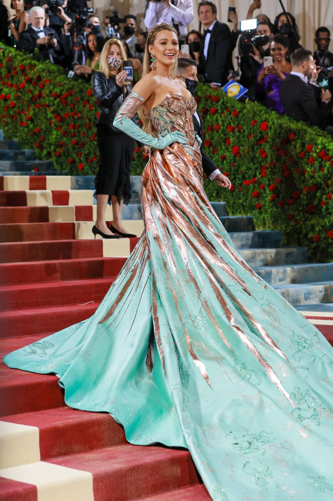

Verb:”Eu vreau”; Element: Foc; Calitate: Fix; Energie: Yang;
Guvernator: Soare; Casa astrologică: Casa a V-a; Zi: Duminica; Culoare: Auriu; Piatra prețioasă: Rubin; Metal: Aur; Anatomie: inima, coloana vertebrală, spatele;
Berbeci Celebri
SIMON BAKER

BLAKE LIVELY

LISA KUDROW
Personalitate
Șeful zodiacului, acest semn zodiacal este extrem de norocos,dar și mândru, reușind să îi jignească ușor pe cei din jur, fără însă să își de-a seama. Înzestrat cu numeroase aptitudini, leul reușeste să facă ușor față oricăror schimbări sau întâmplări neplăcute.
Profesii Potrivite
Nimeni nu conduce mai bine ca un Leu și de aceea nativii acestei zodii se vor îndrepta cu prioritate spre domenii care le permit sǎ fie în frunte, sǎ conducǎ, sǎ strǎluceascǎ. Pot fi generali și regi, dar pot fi și profesori, inspirându-i permanent pe studenți/elevi și molipsindu-i de entuziasm.